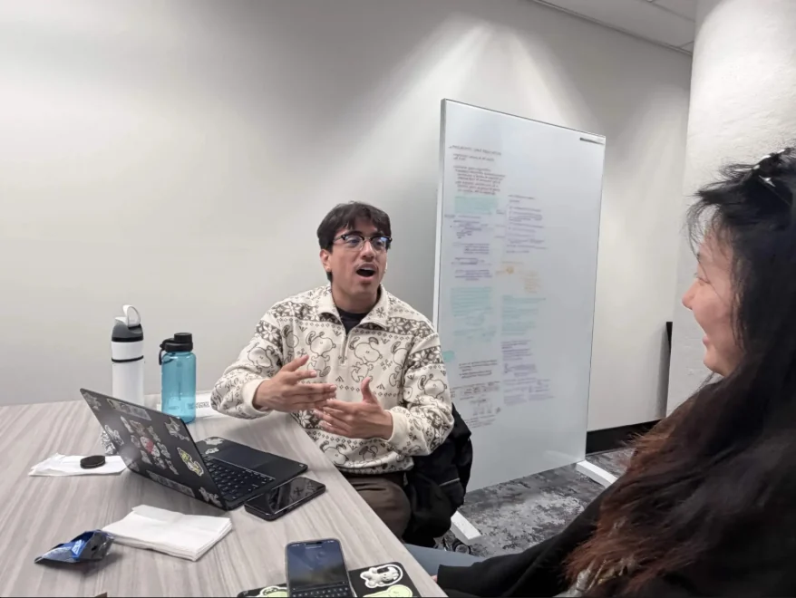
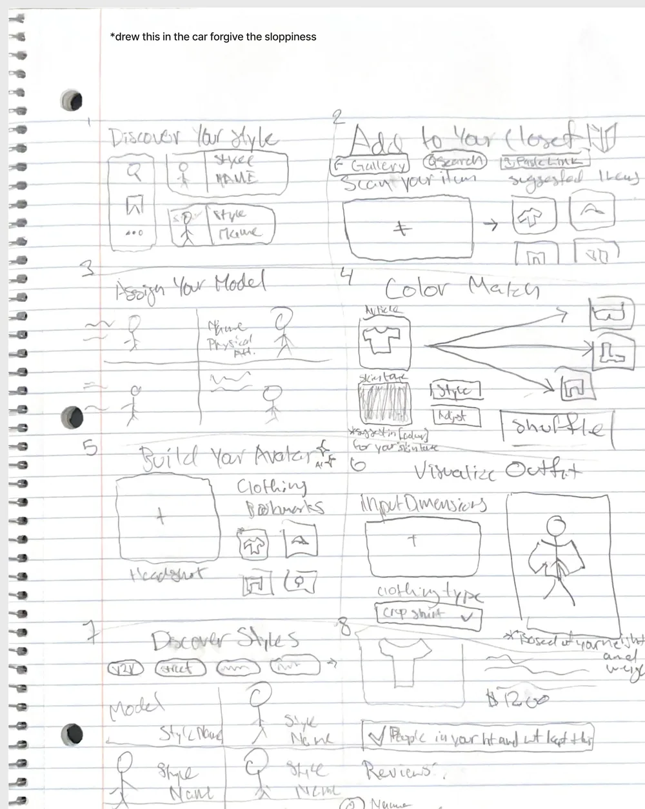
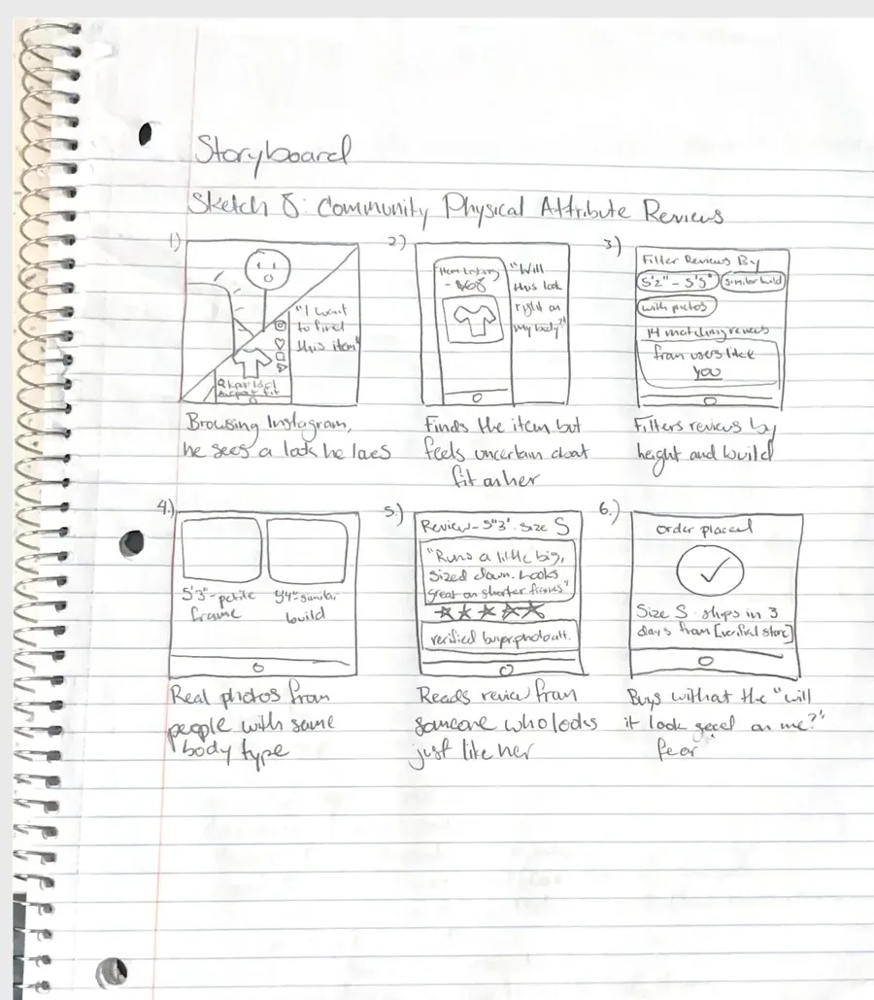
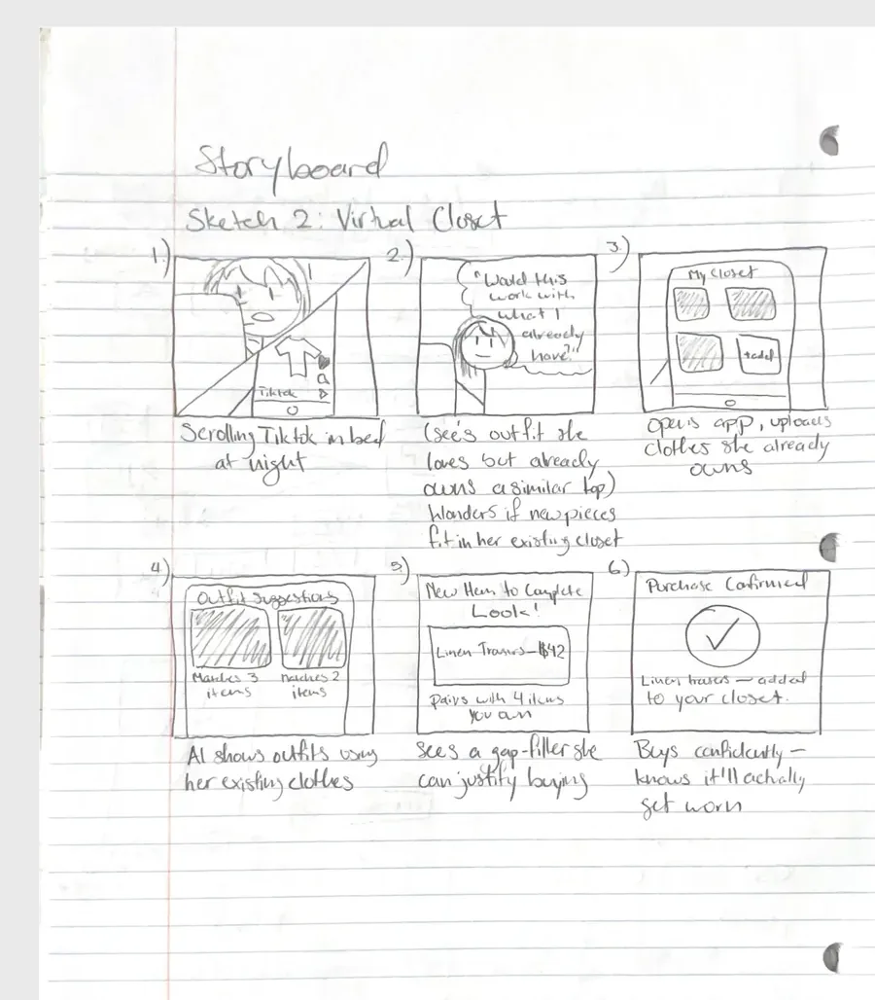
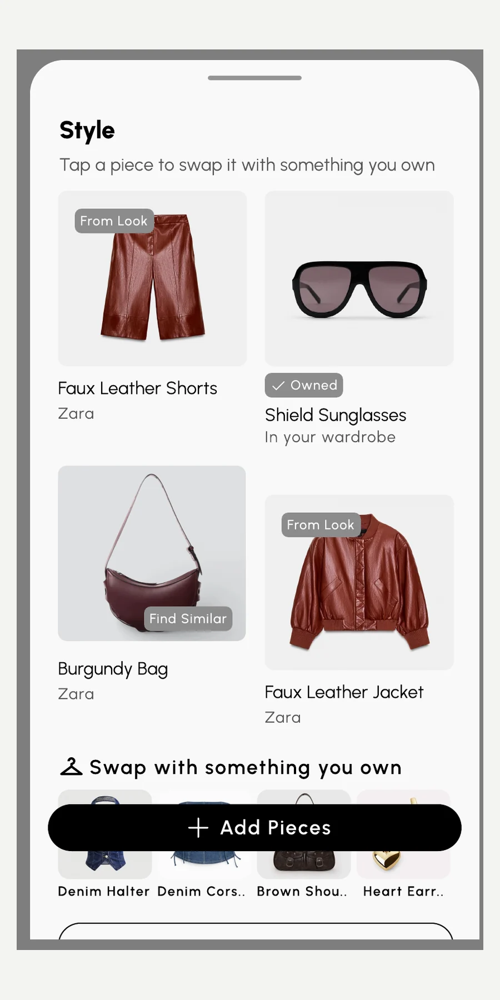
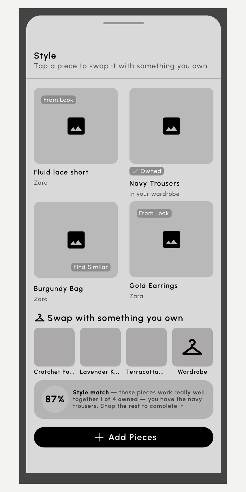
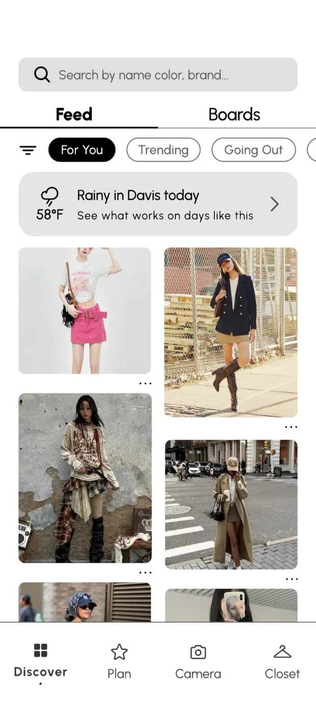
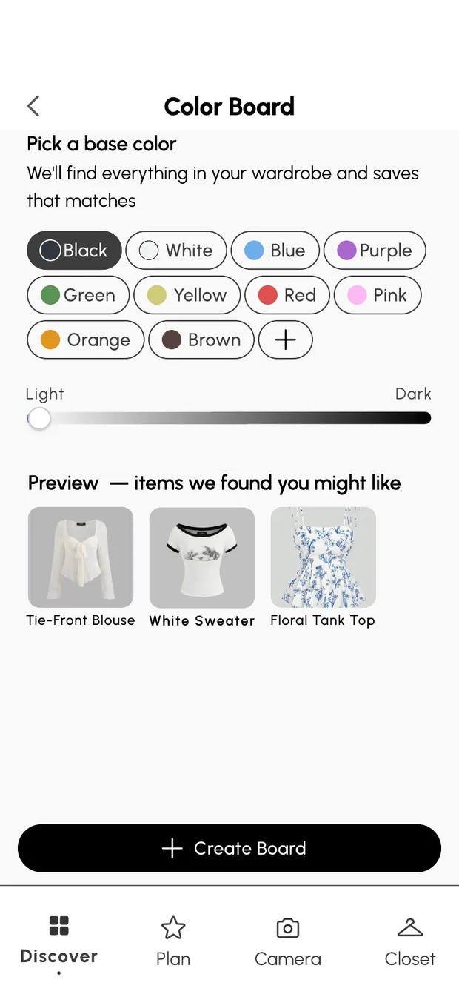
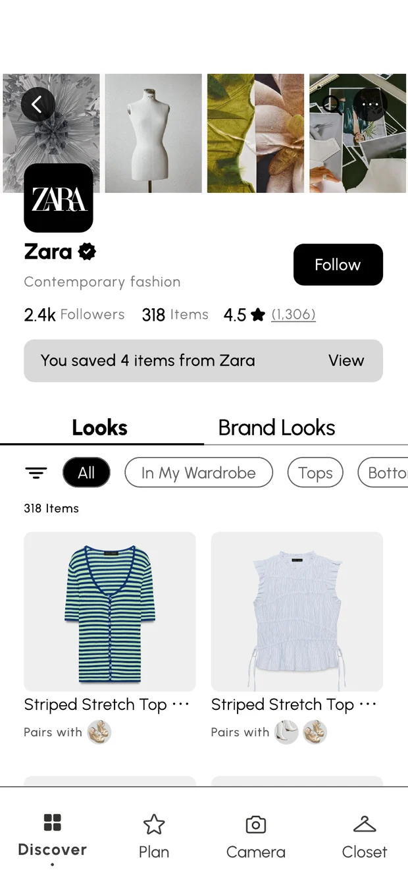
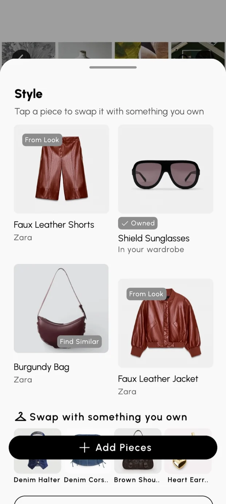

Five designers built a wardrobe app to close the gap between saving an outfit and wearing it
Prompt
UC Davis Design Interactive’s Spring ’26 cohort asked us to help people build a wardrobe that feels personal and intentional, when professional styling is expensive and out of reach.
Problem
People save endless outfit inspiration but can’t turn it into something they can wear. We called this the Translation Gap.
Impact
We pitched Threadit to three industry judges on presentation night, and our team won Best Overall.
Everyone had endless inspiration, but nobody knew how to wear it
Our prompt asked how people can build a wardrobe that feels like theirs. Before designing anything, we wrote down what we assumed and tested it. One person kept coming up, so we gave her a name: Maya, a composite of the patterns we kept seeing.
“200+ saved Pinterest boards”
She saves it
Boards of looks she loves
Maya“A closet full of clothes”
She owns it
Hundreds of options
Maya“I don’t know what to wear.”
She texts her sister
Every single morning
MayaMaya has plenty of inspiration. What she’s missing is a way to connect it to the clothes she owns. That space between finding a look and being able to wear it is the Translation Gap, and we set out to confirm it was real.
74 people shared Maya’s problem, and the four cohorts we interviewed all pointed back to it
We ran a screener survey of 74 people to see how they find fashion and manage their wardrobes, then ran 8+ interviews across the team. Each of us took a different cohort so we’d hear a range of habits, and we recruited from the survey: people answered screener questions, and the ones who opted in to an interview became our participants. Here is what the survey showed:
Four cohorts, four ways of chasing a look
- The Exact Hunter (me, 4 interviews): sees an outfit they love and searches everywhere for that exact item.
- The Vibe Adopter (Nathan): wants the feel of a look, so saves boards by style instead of by piece.
- The Parasocial Shopper (Grace): buys what their favorite creators wear, through affiliate links and GRWM videos.
- The Identity-First Viewer (Emily): buys when they see someone who looks like them wearing it.

The four people I interviewed had all answered the screener as Exact Hunters. They hunt for the exact piece, so they showed me where the trust breaks down:
- Screens never look one-to-one. One interviewee said online outfits never look the same on her because of “ideal bodies.” Another wanted to try pieces in person first.
- Listing photos lost trust. One stopped trusting listings when review photos didn’t match the real product.
- Saves piled up with no system. Saved items got lost, or sat in a cart as a makeshift wishlist.
- They bought by fit with what they owned, asking how well a piece would work with their existing wardrobe.
People don’t lack inspiration. They lack a way to connect it to what they already own, so it feels like theirs.
Help people turn the fashion inspiration they gather into outfits that feel confidently theirs?
We split the app into five features, and I owned Discovery
After research, we mapped features with a feature matrix, affinity mapping, and user flows, and landed on five. Each designer led one:
Onboarding · Nathan
A style quiz and a curated moodboard so users understand their own fashion identity. Nathan also built the design system.
Discovery · me
The for-you feed, boards, and Style Match, which breaks inspiration looks down against what you already own.
Closet · Emily
A digital wardrobe with categories, filters, wear counts, an “In Wash” toggle, and a wishlist.
Calendar and Plan · Grace
An outfit log, plus a short planning quiz with a weather auto-filter and saved looks for easy re-wearing.
Design Lead · Sidney
Kept five features feeling like one app, and opened and closed our final pitch.
How might we show people what they already own the moment they find a look they love?
I sketched eight ideas, then storyboarded the two my interviews pushed me toward
My Crazy 8s ranged from style “characters” and AI avatars to an Add to Your Closet flow. I storyboarded two against what my interviewees said: community reviews filtered by body type, and a virtual closet that suggests outfits from clothes you already own. The virtual closet answered the saved-items-with-no-system problem, and it became the seed of Style Match.



Click a sketch to enlarge it.
Card sorting said Discovery comes first, so it led the app
We card sorted with three participants who each related to fashion differently. Three patterns held across all of them:
- Discovery came first. The for-you feed, search, and outfit suggestions ranked highest, so inspiration is why people open the app.
- Context and weather mattered more than expected, which is why Planning got a weather auto-filter.
- Social features landed last. Nobody valued public profiles, so we kept Threadit personal.
From gray boxes to a sheet that shows what you already own
Style Match opens a sheet for a look. Each piece is tagged From Look, Owned, or Find Similar, and a swap row lets you substitute something from your own closet. Mid-fi proved the layout. Hi-fi added real products so the match felt believable.


Testing showed people missed Style Match, so we moved it up
We tested the mid-fi screens with 5 participants doing five tasks aloud, one per feature. Four findings shaped hi-fi:
- 4 of 5 missed Style Match at first. It sat in secondary navigation. Once they found it, 3 of 5 said they’d use it in real life, and one said, “oh, I actually own pieces like this!” So we moved it to primary navigation.
- Logging was easy, but context was missing. 4 of 5 forgot to tag the occasion or weather, so we inferred weather and location automatically.
- The planning quiz felt long. We cut it from 4 steps to 3, with mood optional.
- We also added a “first wear” highlight in the closet and quick-logging shortcuts.
We cut the AR try-on, because a virtual body doesn’t build confidence
The brief was about confidence. We first explored an AR try-on that would show clothes on a virtual body, and I had sketched avatars and body-based reviews myself. As we built, the team kept coming back to the same worry: a model on a screen can make people feel they have to match it, not feel okay about what they wear.
Build confidence, not hinder it. Only you know what makes you feel confident.
- Cut the try-on and the avatar. The feature would have made the app about how people look, not how they dress.
- Asked how people want to dress, not who they are. We chose sizing and fit over body numbers, and style preferences over fixed categories.
- Kept it personal. Card sorting showed no one wanted public profiles, so there’s no social feed to compare against.
Discovery turns a look you love into what you can wear today
Users spent 45+ minutes trying to work out what to wear from their own closet, with no way to tell if a look would work. Discovery starts from inspiration and ends at the wardrobe.




- For-you feed opens with a weather card, such as “Rainy in Davis today,” so inspiration is matched to the day.
- Boards group saves by color, occasion, or aesthetic, and preview matching items from your own wardrobe.
- Style Match shows what’s from the look, what you already own, and what you still need. Items marked Owned pull from your closet so you never rebuy, and Find Similar keeps the search from dead-ending.
- Camera lets you point at a piece to find outfit ideas.
Five features, each closing one stretch of the journey
- Onboarding turns a style quiz into a curated moodboard with new insights, like a color that matches your wardrobe.
- Discovery connects looks you love to what you own.
- Closet organizes everything, with wear counts to show your most and least worn pieces.
- Calendar logs what you wore, so you can see what worked.
- Plan narrows your wardrobe by weather and occasion, and saves looks you want to wear again.
We won Best Overall by telling Maya’s story instead of listing features
On presentation night, we pitched Threadit around Maya’s morning, not a feature tour. We showed how it fixed her problems one by one: knowing her style, seeing that a look was achievable with pieces she owned, and replacing decision paralysis with clarity.
The judges singled out the storytelling
Our judges were Chris Ota (Staff Product Designer, LinkedIn), Ken Skistimas (Director of UX, ServiceNow), and Aditi Jain (UI Designer, Computrition). All three praised how the story connected research to the solution. Anchoring everything in Maya made the Translation Gap feel real, and made Threadit feel like a solution to a problem instead of a pile of features.
While they were deciding the winner, two of the judges said:
“Even without the numbers, my top three would be Threadit being number one… Just overall concept, execution, presentation, taking all of those things into mind.”
“Where have they taken them to, like, an unexpected place? And I think the wardrobe app did that.”
“They pushed it and had a really good preso behind it too… probably the best out of them with the articulation and everything.”
Where Threadit goes next
- 0 to 1: build a working prototype that tests the full loop from inspiration to outfit, and add UX writing at every touchpoint to build confidence.
- 1 to 2: explore a business model, like a freemium tier with premium styling and partnerships with retailers.
What I’d do differently
- Put the core feature where people look. 4 of 5 testers missed Style Match because I tucked it into secondary navigation. Next time I’d test where the main feature lives first.
- Test the whole loop, not one screen at a time. Our tasks covered each feature. I’d test whether someone can go from a saved look to a worn outfit using their own closet.
- Question ideas against the brief sooner. I sketched body-based ideas early, and we only cut the AR try-on mid-build. Asking “does this build confidence?” from the start would have saved time.
Thank you to my teammates Sidney Heng, Nathan Salas, Grace Asuncion, and Emily Wu; to our industry mentor, Juliana Viado (Product Designer, Leela); and to Design Interactive.